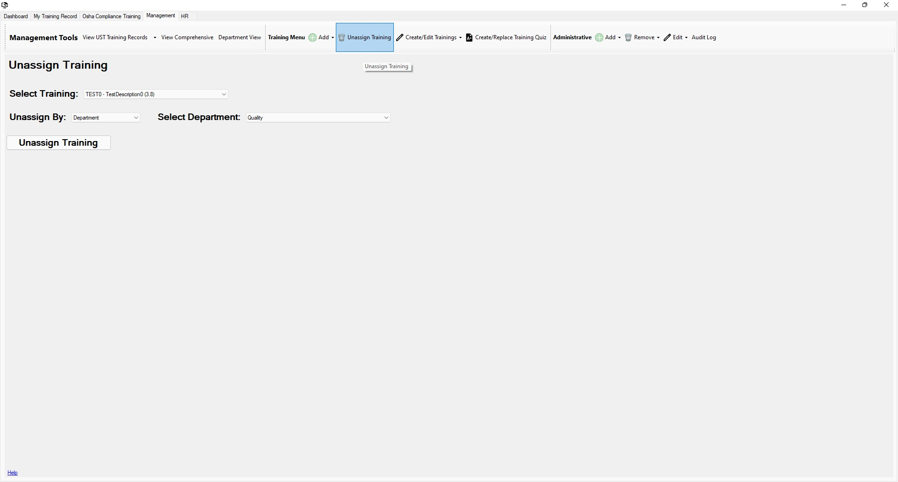

Return to Main Menu
Unassign Training Page
The "Unassign Training" button can be found in the "Training Menu" section of the "Management Tools" toolbar in the management tab.
Unassigning training from an employee removes the training from that employee.
You may choose to unassign a training from a department for future department employees. You may also unassign a training for current and future department employees.

Instructions:
Unassign Training from an Employee
-
Navigate to the Unassign Training page.
-
Select a training to unassign.
-
For the "Unassign By" field: select "Employee".
-
Press the "Unassign Training" button.
Unassign Training from a Department
-
Navigate to the Unassign Training page.
-
Select a training to unassign.
-
For the "Unassign By" field: select "Department".
-
Press the "Unassign Training" button.
-
A popup will appear notifying you that the training has been successfully unassigned from the department.
You will be asked if you wish to unassign the training from the current employees of that department as well.
-
If you wish to unassign the training from the current members of the department, press yes. Otherwise press no.